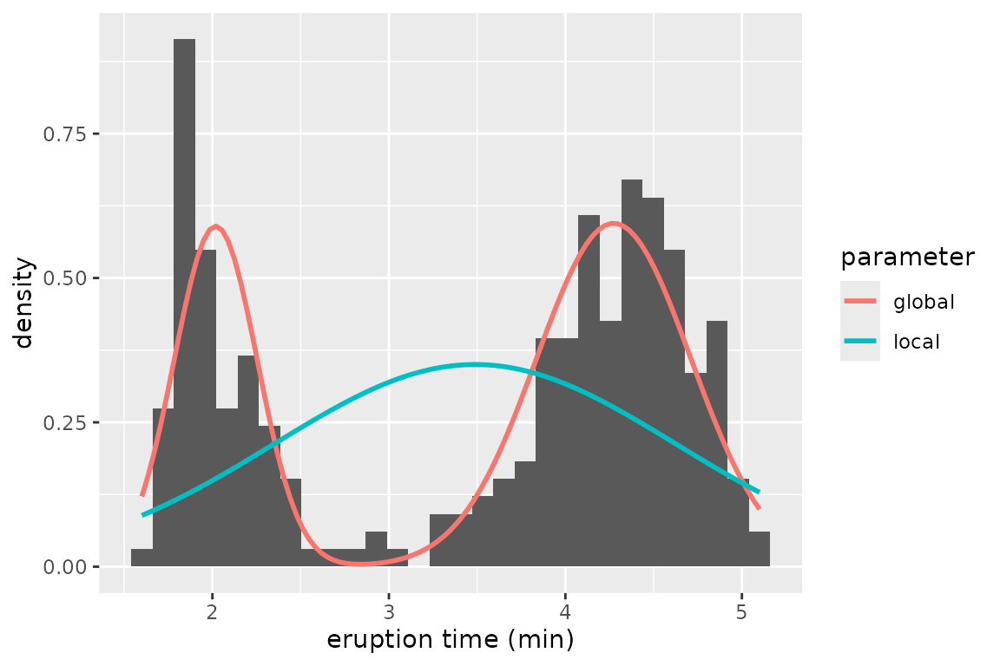
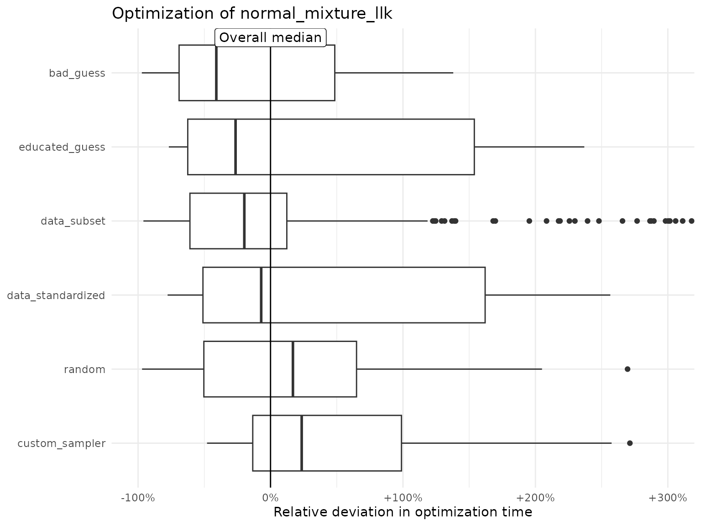
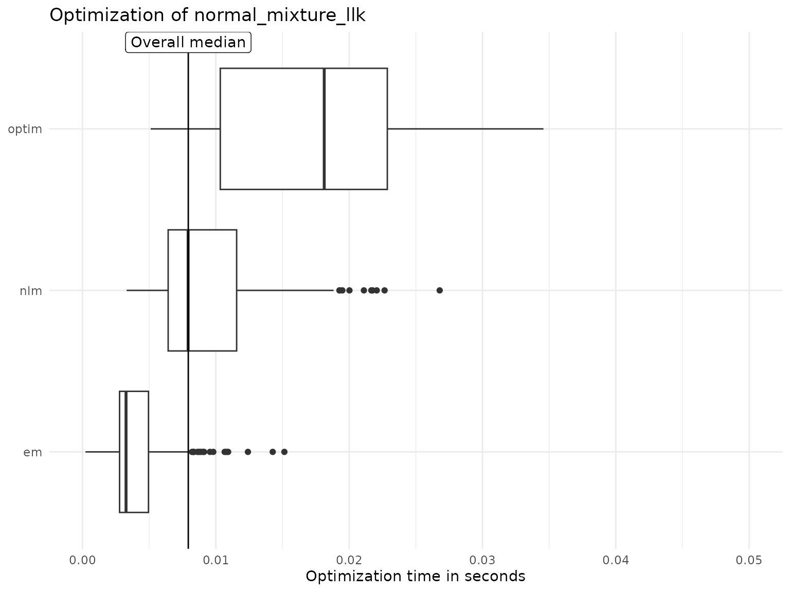

Motivation
Optimization is of great relevance in many fields, including finance
(portfolio optimization), engineering (minimizing air resistance), and
statistics (likelihood maximization for model fitting). Often, the
optimization problem at hand cannot be solved analytically, for example
when explicit formulas for gradient or Hessian are not available. In
these cases, numerical optimization algorithms are helpful. They
iteratively explore the parameter space, guaranteeing to improve the
function value over each iteration, and eventually converge to a point
where no more improvements can be made (Bonnans et al.
2006). In R, several functions are available that can be
applied to numerically solve optimization problems, including (quasi)
Newton (stats::nlm(), stats::nlminb(),
stats::optim()), direct search
(pracma::nelder_mead()), and conjugate gradient methods
(Rcgmin::Rcgmin()). The CRAN Task View:
Optimization and Mathematical Programming provides a comprehensive
list of packages for solving optimization problems.
One thing that all of these numerical optimizers have in common is that initial parameter values must be specified, i.e., the point from where the optimization is started. Optimization theory (Nocedal and Wright 2006) states that the choice of an initial point has a large influence on the optimization result, in particular convergence time and rate. In general, starting in areas of function saturation increases computation time, starting in areas of non-concavity leads to convergence problems or convergence to local rather than global optima. Consequently, numerical optimization can be facilitated by
analyzing the initialization effect for the optimization problem at hand and
putting effort on identifying good starting values.
However, it is generally unclear what good initial values are and how they might affect the optimization. Therefore, the purpose of the ino R package1 is to provide a comprehensive toolbox for
evaluating the effect of the initial values on the optimization,
comparing different initialization strategies,
and comparing different optimizers.
Package functionality
To specify an optimization problem in ino, we use an
object-oriented framework based on the R6 package (Chang
2021). The general workflow is to first create a
Nop object2, and then apply methods to change the
attributes of that object, e.g., to optimize the function and
investigate the optimization results:
The starting point for working with ino is to initialize a
Nopobject viaobject <- Nop$new().Next, use the method
$set_optimizer()to define one or more numerical optimizer.Then,
$evaluate()evaluates and$optimize()optimizes the objective function.For analyzing the results,
$optima()provides an overview of all identified optima, and the$plot()and$summary()methods summarize the optimization runs.The methods
$standardize()and$reduce()are available to advantageously transform the optimization problem.
We illustrate these methods in the following application.
Workflow
We demonstrate the basic ino workflow in the context
of likelihood maximization, where we fit a two-class Gaussian mixture
model to Geyser eruption times from the popular faithful
data set that is provided via base R.
Remark: Optimization in this example is very fast. This is because the data set is relatively small and we consider a model with two classes only. Therefore, it might not seem relevant to be concerned about initialization here. However, the problem scales: optimization time will rise with more data and more parameters, in which case initialization becomes a greater issue, see for example Shireman, Steinley, and Brusco (2017). Additionally, we will see that even this simple optimization problem suffers heavily from local optima, depending on the choice of initial values.
The optimization problem
The faithful data set contains information about
eruption times (eruptions) of the Old Faithful geyser in
Yellowstone National Park, Wyoming, USA.
str(faithful)
#> 'data.frame': 272 obs. of 2 variables:
#> $ eruptions: num 3.6 1.8 3.33 2.28 4.53 ...
#> $ waiting : num 79 54 74 62 85 55 88 85 51 85 ...The data histogram hints at two clusters with short and long eruption times, respectively.
library("ggplot2")
ggplot(faithful, aes(x = eruptions)) +
geom_histogram(aes(y = after_stat(density)), bins = 30) +
xlab("eruption time (min)") For both clusters, we assume a normal distribution, such that we consider a mixture of two Gaussian densities for modeling the overall eruption times. The log-likelihood function is defined by
\[\begin{equation} \ell(\boldsymbol{\theta}) = \sum_{i=1}^n \log\Big( \lambda \phi_{\mu_1, \sigma_1^2}(x_i) + (1-\lambda)\phi_{\mu_2,\sigma_2^2} (x_i) \Big), \end{equation}\]
where the sum goes over all observations \(1, \dots, n = 272\), \(\phi_{\mu_1, \sigma_1^2}\) and \(\phi_{\mu_2, \sigma_2^2}\) denote the normal density for the first and second cluster, respectively, and \(\lambda\) is the mixing proportion. The parameter vector to be estimated is thus \(\boldsymbol{\theta} = (\mu_1, \mu_2, \sigma_1, \sigma_2, \lambda)\). As there exists no closed-form solution for the maximum likelihood estimator \(\boldsymbol{\theta}^* = \arg\max_{\boldsymbol{\theta}} \ell(\boldsymbol{\theta})\), we need numerical optimization for finding the function optimum.
The following function calculates the log-likelihood value given the
parameter vector theta and the observation vector
data.
Remark: We restrict the standard deviations
sdto be positive (via the exponential transformation) andlambdato be between 0 and 1 (via the logit transformation). The function returns the negative log-likelihood value by default (neg = TRUE). This is necessary because most R optimizers only minimize (e.g.,stats::nlm), where we can use the fact that \(\arg\max_{\boldsymbol{\theta}} \ell(\boldsymbol{\theta}) = \arg\min_{\boldsymbol{\theta}} -\ell(\boldsymbol{\theta})\).
normal_mixture_llk <- function(theta, data, neg = TRUE){
stopifnot(length(theta) == 5)
mu <- theta[1:2]
sd <- exp(theta[3:4])
lambda <- plogis(theta[5])
llk <- sum(log(lambda * dnorm(data, mu[1], sd[1]) + (1 - lambda) * dnorm(data, mu[2], sd[2])))
ifelse(neg, -llk, llk)
}
normal_mixture_llk(theta = 1:5, data = faithful$eruptions)
#> [1] 1069.623Another optimization approach: the expectation-maximization (EM) algorithm
Solving \(\boldsymbol{\theta}^* = \arg\max_{\boldsymbol{\theta}} \ell(\boldsymbol{\theta})\) requires numerical aid because \(\frac{\text{d}}{\text{d}\boldsymbol{\theta}} \ell(\boldsymbol{\theta})\) does not have a closed-form solution. However, if we knew the class membership of each observation, the optimization problem would collapse to independent maximum likelihood estimation of two Gaussian distributions, which then can be solved analytically. This observation motivates the so-called expectation-maximization (EM) algorithm (Dempster, Laird, and Rubin 1977), which iterates through the following steps:
- Initialize \(\boldsymbol{\theta}\) and compute \(\ell(\boldsymbol{\theta})\).
- Calculate the posterior probabilities for each observation’s class membership, conditional on \(\boldsymbol{\theta}\).
- Calculate the maximum likelihood estimate \(\boldsymbol{\bar{\theta}}\) conditional on the posterior probabilities from step 2.
- Evaluate \(\ell(\boldsymbol{\bar{\theta}})\). Now stop
if the likelihood improvement \(\ell(\boldsymbol{\bar{\theta}}) -
\ell(\boldsymbol{\theta})\) is smaller than some threshold
epsilonor some iteration limititerlimis reached. Otherwise, go back to step 2.
The following function implements this algorithm, which we will compare to standard numerical optimization below.
em <- function(normal_mixture_llk, theta, epsilon = 1e-08, iterlim = 1000, data) {
llk <- normal_mixture_llk(theta, data, neg = FALSE)
mu <- theta[1:2]
sd <- exp(theta[3:4])
lambda <- plogis(theta[5])
for (i in 1:iterlim) {
class_1 <- lambda * dnorm(data, mu[1], sd[1])
class_2 <- (1 - lambda) * dnorm(data, mu[2], sd[2])
posterior <- class_1 / (class_1 + class_2)
lambda <- mean(posterior)
mu[1] <- mean(posterior * data) / lambda
mu[2] <- (mean(data) - lambda * mu[1]) / (1 - lambda)
sd[1] <- sqrt(mean(posterior * (data - mu[1])^2) / lambda)
sd[2] <- sqrt(mean((1 - posterior) * (data - mu[2])^2) / (1 - lambda))
llk_old <- llk
theta <- c(mu, log(sd), qlogis(lambda))
llk <- normal_mixture_llk(theta, data, neg = FALSE)
if (is.na(llk)) stop("fail")
if (llk - llk_old < epsilon) break
}
list("neg_llk" = -llk, "estimate" = theta, "iterations" = i)
}Setup
The optimization problem is specified as a Nop object
called geyser, where
-
fis the function to be optimized (herenormal_mixture_llk), -
nparspecifies the length of the parameter vector over whichfis optimized (five in this case), - and
datagives the observation vector as required by our likelihood function.
geyser <- Nop$new(
f = normal_mixture_llk,
npar = 5,
data = faithful$eruptions
)Printing the object provides a specification overview:
print(geyser)
#> Optimization problem:
#> - Function: normal_mixture_llk
#> - Optimize over: theta (length 5)
#> - Additional arguments: data
#> Numerical optimizer:
#> No optimizer specified yet.
#> Optimization results:
#> No results saved yet.
#> The next step concerns specifying the numerical optimizer via the
$set_optimizer() method.
Remark: Numerical optimizers must be specified through the unified framework provided by the {optimizeR} package (Oelschläger and Ötting 2023). This is necessary because there is no a priori consistency across optimization functions in R with regard to their function inputs and outputs. This would make it impossible to allow for arbitrary optimizers and to compare their results, see the {optimizeR} README file for details.
It is possible to define any numerical optimizer implemented in R
through the {optimizeR} framework. Here, we select two of the most
popular ones, stats::nlm() and
stats::optim():
geyser$
set_optimizer(optimizer_nlm(), label = "nlm")$
set_optimizer(optimizer_optim(), label = "optim")Remark: The previous code chunk makes use of a technique called “method chaining” (see Wickham 2019, ch. 14.2.1). This means that
geyser$set_optimizer()returns the modifiedgeyserobject, for which we can specify a second optimizer by calling$set_optimizer()again.
We also want to apply the EM algorithm introduced above:
em_optimizer <- optimizeR::define_optimizer(
optimizer = em, objective = "normal_mixture_llk",
initial = "theta", value = "neg_llk", parameter = "estimate"
)
geyser$set_optimizer(em_optimizer, label = "em")Finally, we can validate our specification:
geyser$test(verbose = TRUE)
#> ℹ Test configuration
#> ✔ Function specified: normal_mixture_llk
#> ✔ Target argument specified: theta (length 5)
#> ✔ Test initial values specified: -0.84 1.6 0.33 -0.82 0.49
#> ℹ Test function call
#> ✔ Test function call returned a <numeric>.
#> ✔ Return value: 1656.7
#> ℹ Test optimization with `nlm`
#> ✔ Test optimization returned a <list>.
#> ✔ Return value: 421.42
#> ✔ Return parameter: 7 3.49 37.15 0.13 -23.35
#> ✔ Return seconds: 0.01
#> ℹ Test optimization with `optim`
#> ✔ Test optimization returned a <list>.
#> ✔ Return value: 277.34
#> ✔ Return parameter: 4.26 2 -0.83 -1.52 0.53
#> ✔ Return seconds: 0.02
#> ℹ Test optimization with `em`
#> ✔ Test optimization returned a <list>.
#> ✔ Return value: 276.36
#> ✔ Return parameter: 4.27 2.02 -0.83 -1.45 0.63
#> ✔ Return seconds: 0.03Function evaluation
Once the Nop object is specified, evaluating
normal_mixture_llk at some value for the parameter vector
theta is simple with the $evaluate() method,
for example:
geyser$evaluate(at = 1:5)
#> [1] 1069.623Function optimization
Optimization of normal_mixture_llk is possible with the
$optimize() method, for example:
geyser$optimize(initial = "random", which_optimizer = "nlm", save_result = FALSE, return_result = TRUE)
#> $value
#> [1] 421.417
#>
#> $parameter
#> [1] -0.6263152 3.4877817 -0.8353112 0.1303885 -23.1685784
#>
#> $seconds
#> [1] 0.007810354
#>
#> $initial
#> [1] -0.6264538 0.1836433 -0.8356286 1.5952808 0.3295078
#>
#> $gradient
#> [1] 0.000000e+00 6.716353e-05 0.000000e+00 1.141416e-04 2.453470e-08
#>
#> $code
#> [1] 1
#>
#> $iterations
#> [1] 36The method arguments are:
initial = "random"for random starting values drawn from a standard normal distribution,which_optimizer = "nlm"for optimization with the above specifiedstats::nlmoptimizer,save_result = FALSEto not save the optimization result inside thegeyserobject (see below),and
return_results = TRUEto directly return the optimization result instead.
The return value is a list of:
value, the optimum function value,parameter, the parameter vector wherevalueis obtained,seconds, the estimation time in seconds,initial, the starting parameter vector for the optimization,and
gradient,code, anditerations, which are outputs specific to thestats::nlmoptimizer.
Initialization effect
We are interested in the effect of the starting values on the
optimization, i.e., whether different initial values lead to different
results. We therefore optimize the likelihood function
runs = 100 times at different random starting points
(initial = "random") and compare the identified optima:
geyser$optimize(initial = "random", runs = 100, label = "random", save_results = TRUE, seed = 1)Note:
- We label the optimization results with
label = "random", which will be useful later for comparisons. - We set
save_results = TRUEto save the optimization results inside thegeyserobject (so that we can use the$optima(),$summary(), and$plot()methods for comparisons, see below). - The
seed = 1argument ensures reproducibility.
The $optima() method provides an overview of the
identified optima. Here, we ignore any decimal places by setting
digits = 0 and sort by the optimum function
value:
geyser$optima(digits = 0, sort_by = "value")
#> value frequency
#> 1 276 105
#> 2 277 1
#> 3 283 1
#> 4 290 1
#> 5 294 1
#> 6 296 1
#> 7 316 1
#> 8 323 1
#> 9 355 1
#> 10 364 1
#> 11 368 1
#> 12 370 1
#> 13 372 1
#> 14 374 1
#> 15 389 1
#> 16 395 2
#> 17 397 1
#> 18 400 1
#> 19 402 1
#> 20 406 2
#> 21 415 1
#> 22 419 2
#> 23 420 1
#> 24 421 163
#> 25 <NA> 7The 100 optimization runs with 3 optimizers using random starting
values led to 24 different optima (minima in this case, because we
minimized normal_mixture_llk()), while 7 optimization runs
failed. We therefore can already deduce that the initial values have a
huge impact on the optimization result.
Looking at this overview optimizer-wise reveals that the
stats::optim optimizer seems to be most vulnerable to local
optima:
geyser$optima(digits = 0, sort_by = "value", which_optimizer = "nlm")
#> value frequency
#> 1 276 19
#> 2 370 1
#> 3 406 1
#> 4 421 79
geyser$optima(digits = 0, sort_by = "value", which_optimizer = "optim")
#> value frequency
#> 1 276 4
#> 2 277 1
#> 3 283 1
#> 4 290 1
#> 5 294 1
#> 6 296 1
#> 7 316 1
#> 8 323 1
#> 9 355 1
#> 10 364 1
#> 11 368 1
#> 12 372 1
#> 13 374 1
#> 14 389 1
#> 15 395 2
#> 16 400 1
#> 17 402 1
#> 18 406 1
#> 19 415 1
#> 20 419 2
#> 21 420 1
#> 22 421 74
geyser$optima(digits = 0, sort_by = "value", which_optimizer = "em")
#> value frequency
#> 1 276 82
#> 2 397 1
#> 3 421 10
#> 4 <NA> 7The two most occurring optima are 421 and 276 with total frequencies of 163 and 105, respectively. The value 276 is the overall minimum (potentially the global minimum), while 421 is significantly worse.
To compare the parameter vectors that led to these different values,
we can use the $closest_parameter() method. From the saved
optimization runs, it extracts the parameter vector corresponding to an
optimum closest to value. We consider only results from the
nlm optimizer here:
(mle <- geyser$closest_parameter(value = 276, which_optimizer = "nlm"))
#> [1] 2.02 4.27 -1.45 -0.83 -0.63
#> attr(,"run")
#> [1] 89
#> attr(,"optimizer")
#> [1] "nlm"
geyser$evaluate(at = as.vector(mle))
#> [1] 276.3699
mle_run <- attr(mle, "run")
(bad <- geyser$closest_parameter(value = 421, which_optimizer = "nlm"))
#> [1] 3.49 2.11 0.13 -0.09 17.49
#> attr(,"run")
#> [1] 13
#> attr(,"optimizer")
#> [1] "nlm"
geyser$evaluate(at = as.vector(bad))
#> [1] 421.4176
bad_run <- attr(bad, "run")These two parameter vectors are saved as mle (this shall
be our maximum likelihood estimate) and bad (this clearly
is a bad estimate). Two attributes show the run id and the optimizer
that led to these parameters.
To understand the values in terms of means, standard deviations, and mixing proportion (i.e., in the form \(\boldsymbol{\theta} = (\mu_1, \mu_2, \sigma_1, \sigma_2, \lambda)\)), they need transformation (see above):
transform <- function(theta) c(theta[1:2], exp(theta[3:4]), plogis(theta[5]))
(mle <- transform(mle))
#> [1] 2.0200000 4.2700000 0.2345703 0.4360493 0.3475105
(bad <- transform(bad))
#> [1] 3.4900000 2.1100000 1.1388284 0.9139312 1.0000000The two estimates mle and bad for \(\boldsymbol{\theta}\) correspond to the
following mixture densities:
mixture_density <- function (data, mu, sd, lambda) {
lambda * dnorm(data, mu[1], sd[1]) + (1 - lambda) * dnorm(data, mu[2], sd[2])
}
ggplot(faithful, aes(x = eruptions)) +
geom_histogram(aes(y = after_stat(density)), bins = 30) +
labs(x = "eruption time (min)", colour = "parameter") +
stat_function(
fun = function(x) {
mixture_density(x, mu = mle[1:2], sd = mle[3:4], lambda = mle[5])
}, aes(color = "mle"), linewidth = 1
) +
stat_function(
fun = function(x) {
mixture_density(x, mu = bad[1:2], sd = bad[3:4], lambda = bad[5])
}, aes(color = "bad"), linewidth = 1
)
The mixture defined by the mle parameter fits much
better than bad, which practically estimates only a single
class. However, the gradients at both points are close to zero, which
explains why the nlm optimizer terminates at both
points:
geyser$results(which_run = c(mle_run, bad_run), which_optimizer = "nlm", which_element = "gradient")
#> [[1]]
#> gradient1 gradient2 gradient3 gradient4 gradient5
#> 2.826051e-05 -8.066033e-08 7.162271e-06 4.604317e-06 6.532028e-07
#>
#> [[2]]
#> gradient1 gradient2 gradient3 gradient4 gradient5
#> 2.630258e-06 -1.495794e-07 -1.724342e-07 6.247092e-07 2.660272e-07Custom sampler for initial values
Depending on the application and the magnitude of the parameters to
be estimated, initial values drawn from a standard normal distribution
(which is the default behavior when calling
$optimize(initial = "random")) may not be a good guess. We
can, however, easily modify the distribution that is used to draw the
initial values. For example, the next code snippet uses starting values
drawn from a \(\mathcal{N}(\mu = 2, \sigma =
0.5)\) distribution:
sampler <- function() stats::rnorm(5, mean = 2, sd = 0.5)
geyser$optimize(initial = sampler, runs = 100, label = "custom_sampler")To obtain the first results of these optimization runs, we can use
the summary() method. Note that setting
which_run = "custom_sampler" allows filtering, which is the
benefit of setting a label when calling
$optimize().
summary(geyser, which_run = "custom_sampler", digits = 2) |>
head(n = 10)
#> value parameter
#> 1 421.42 3.49, 2.11, 0.13, -0.16, 16.75
#> 2 421.42 3.49, -1.41, 0.13, -10.17, 16.53
#> 3 276.36 2.02, 4.27, -1.45, -0.83, -0.63
#> 4 276.36 4.27, 2.02, -0.83, -1.45, 0.63
#> 5 421.42 3.49, 5.54, 0.13, 1.79, 14.70
#> 6 276.36 4.27, 2.02, -0.83, -1.45, 0.63
#> 7 276.36 4.27, 2.02, -0.83, -1.45, 0.63
#> 8 405.72 4.33, 2.16, 0.06, -0.36, 0.70
#> 9 276.36 4.27, 2.02, -0.83, -1.45, 0.63
#> 10 276.36 4.27, 2.02, -0.83, -1.45, 0.63Again we obtain different optima (even more than before). But in contrast, most of the runs here lead to the presumably global optimum of 276:
geyser$optima(digits = 0, sort_by = "value", which_run = "custom_sampler")
#> value frequency
#> 1 276 183
#> 2 277 1
#> 3 278 1
#> 4 283 1
#> 5 288 1
#> 6 289 1
#> 7 291 1
#> 8 292 1
#> 9 295 1
#> 10 297 1
#> 11 303 1
#> 12 314 1
#> 13 316 1
#> 14 317 1
#> 15 320 1
#> 16 321 1
#> 17 329 1
#> 18 331 1
#> 19 333 1
#> 20 335 1
#> 21 337 1
#> 22 338 1
#> 23 339 1
#> 24 344 1
#> 25 347 1
#> 26 351 1
#> 27 352 1
#> 28 362 1
#> 29 368 1
#> 30 376 1
#> 31 377 1
#> 32 380 1
#> 33 390 3
#> 34 395 1
#> 35 397 1
#> 36 398 1
#> 37 401 1
#> 38 402 1
#> 39 405 1
#> 40 406 2
#> 41 407 1
#> 42 409 2
#> 43 411 3
#> 44 415 1
#> 45 416 2
#> 46 417 1
#> 47 419 1
#> 48 421 64Educated guesses
Next we make “educated guesses” about starting values that are
probably close to the global optimum. Based on the histogram above, the
means of the two normal distributions may be somewhere around 2 and 4.
We will use sets of starting values where the means are lower and larger
than 2 and 4, respectively. For the variances, we set the starting
values close to 1 (note that we use the log transformation here since we
restrict the standard deviations to be positive by using
exp() in the log-likelihood function). The starting value
for the mixing proportion shall be around 0.5. This leads to the
following 32 combinations of starting values:
mu_1 <- c(1.7, 2.3)
mu_2 <- c(4.3, 3.7)
sd_1 <- sd_2 <- c(log(0.8), log(1.2))
lambda <- c(qlogis(0.4), qlogis(0.6))
starting_values <- asplit(expand.grid(mu_1, mu_2, sd_1, sd_2, lambda), MARGIN = 1)In the $optimize() method, instead of
initial = "random", we can set initial to a
numeric vector of length npar, or, for convenience, to a
list of such vectors, like
starting_values:
geyser$optimize(initial = starting_values, label = "educated_guess")These “educated guesses” lead to a way more stable optimization:
geyser$optima(digits = 0, which_run = "educated_guess")
#> value frequency
#> 1 276 95
#> 2 277 1For comparison, we consider a set of implausible starting values, which leads to local optima:
Standardizing the optimization problem
In some situations, it is possible to consider a standardized version
of the optimization problem, which could potentially improve the
performance of the numerical optimizer. In our example, we can
standardize the data before running the optimization via the
$standardize() method:
geyser$standardize("data")
str(geyser$get_argument("data"))
#> num [1:272] 0.0983 -1.4787 -0.1356 -1.0556 0.9158 ...To optimize the likelihood using the standardized data set, we again
use $optmize(), which by default uses random starting
values. Below, we will compare these results with those obtained on the
original optimization problem.
geyser$
optimize(runs = 100, label = "data_standardized")$
reset_argument("data")The usage of $reset_argument("data") is important: to
perform further optimization runs after having applied standardized
initialization, we undo the standardization of the data and obtain the
original data set. If we would not use $reset_argument(),
all further optimization runs will be carried out on the standardized
data set.
Reducing the optimization problem
In some situations, it is possible to first optimize a sub-problem
and use those results as an initialization for the full optimization
problem. For example, in the context of likelihood maximization, if the
data set considered shows some complex structures or is very large,
numerical optimization may become computationally costly. In such cases,
it can be beneficial to initially consider a reduced data set. The
following application of the $reduce() method transforms
"data" by selecting a proportion of 30% data points at
random:
geyser$reduce(argument_name = "data", how = "random", prop = 0.3, seed = 1)
str(geyser$get_argument("data"))
#> num [1:82] 4.2 1.75 4.25 1.75 3.45 ...Similar to the standardizing above, calling $optimize()
now optimizes on the reduced data set:
geyser$
optimize(runs = 100, label = "data_subset")$
reset_argument("data")$
continue()Again, we use $reset_argument("data") to obtain the
original data set. The $continue() method now optimizes on
the whole data set using the estimates obtained on the reduced data as
initial values.
In addition to selecting sub samples at random
(how = "random"), four other options exist via specifying
the argument how:
-
"first"selects the top data points, -
"last"selects the last data points, -
"similarselects similar data points based on k-means clustering, -
"dissimilar"is similar to"similar"but selects dissimilar data points.
See the other two vignettes for demonstrations of these options.
Optimization times
The $plot() method provides an overview of the
optimization times. Setting by = "label" allows for
comparison across initialization strategies, setting
relative = TRUE plots relative differences to the median of
the top boxplot:
geyser$plot(by = "label", relative = TRUE)
Setting by = "optimizer" allows comparison across
optimizers:
geyser$plot(by = "optimizer", relative = FALSE)
The global optimum
The best optimization result can be extracted via:
geyser$best_value()
#> [1] 248.98
#> attr(,"run")
#> [1] 421
#> attr(,"optimizer")
#> [1] "em"
geyser$best_parameter()
#> [1] 3.53 1.75 0.11 -32.71 3.79
#> attr(,"run")
#> [1] 421
#> attr(,"optimizer")
#> [1] "em"The best function value of 248.98 is unique:
head(geyser$optima(digits = 0, sort_by = "value"))
#> value frequency
#> 1 249 1
#> 2 276 514
#> 3 277 4
#> 4 278 1
#> 5 283 2
#> 6 288 1Furthermore, it does not produce a two-class mixture, since one class
variance is practically zero, see the output of
geyser$best_parameter(). We can therefore delete this
result from our Nop object:
geyser$clear(which_run = attr(geyser$best_value(), "run"))The final Nop object then looks as follows:
print(geyser)
#> Optimization problem:
#> - Function: normal_mixture_llk
#> - Optimize over: theta (length 5)
#> - Additional arguments: data
#> Numerical optimizer:
#> - 1: nlm
#> - 2: optim
#> - 3: em
#> Optimization results:
#> - Total runs (comparable): 433 (332)
#> - Best parameter: 2.02 4.27 -1.45 -0.83 -0.63
#> - Best value: 276.36